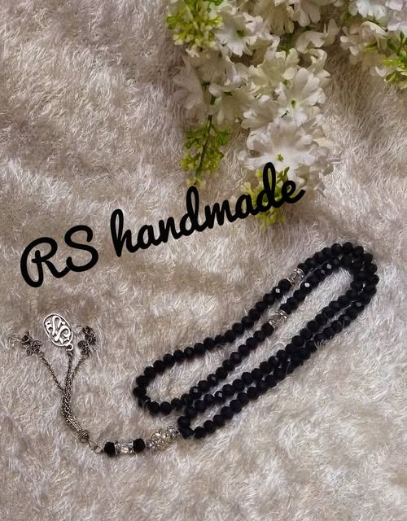
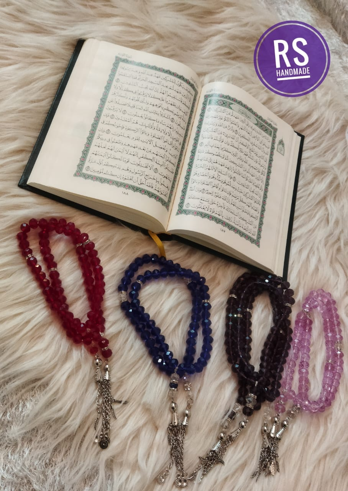
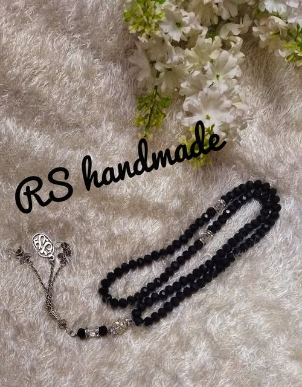
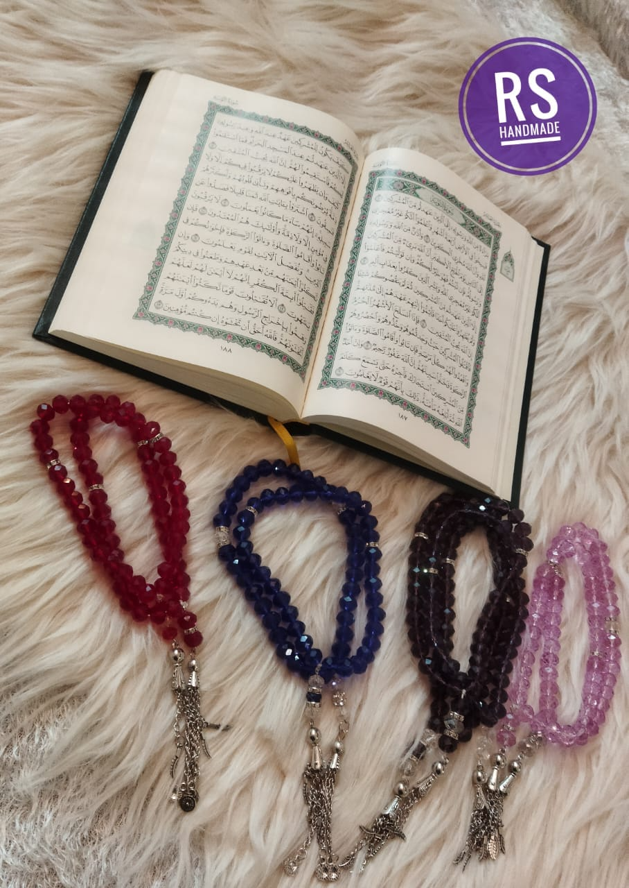

Handcrafted Premium Misbaha
Our handcrafted Misbaha (prayer beads) is a beautiful and meaningful piece that combines traditional craftsmanship with spiritual significance. Each bead is carefully selected and assembled with attention to detail, creating a prayer tool that is both functional and aesthetically pleasing.
Features:
- Handcrafted with premium quality materials
- Traditional design with modern elegance
- Smooth, comfortable beads for easy handling
- Durable construction for long-lasting use
- Perfect for daily prayers and meditation
Care Instructions:
- Handle with care to maintain the beads' finish
- Store in a cool, dry place
- Clean with a soft, dry cloth
- Avoid exposure to water and harsh chemicals